| Prev | Next |
Heap and Heap sort
Certain problems can be efficiently solved by use of an appropriate data structure. The sorting problem too can be solved efficiently using the data structure: (Binary) Heap.
Note: The 'Heap' data structure has nothing to do with 'Heap' concept in Operating systems.
What is a binary heap?
A binary heap, more simply a heap, is a binary tree where parent and children are related by a specific property based on whether it is a max-heap and min-heap.
- In a max heap, the parent is greater than the children.
- In a min heap, the parent is smaller than the children.
- Siblings don't share any relation between each other.
| A min heap 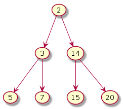 | A max heap 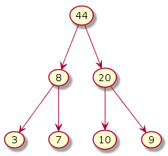 | Not a max heap - 44 violates 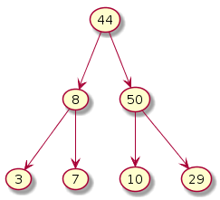 |
Note: We will be concerned only with Max-Heap. Working with min-heap is analogous.
What makes 'heap' special?
- It is complete. Elements are added level-by-level and violation of heap property is fixed by exchanges.
- Max element is sitting at the root and hence it take Θ(1) time to access it.
- It takes Θ(logn) time to perform insert and delete operations. In a sorted array it is Θ(n).
- An array can be used to represent the heap. Consider the max heap given above. They can be stored as: {44,8,20,3,7,10,9}.
- Assuming 0-based array indexing, given a number at index i
- its children can be found at locations 2i+1 and 2i+2
- its parent can be found at location (i-1)/2 (floor value)
| i | 0 | 1 | 2 | 3 | 4 | 5 | 6 |
| A[i] | 44 | 8 | 20 | 3 | 7 | 10 | 9 |
Inserting into a heap: An example
An insert operation adds the new element to the end of the heap.
|
Initial Start state of heap 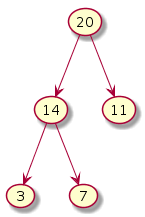 |
Insert 30 No more a heap |
Fix heap Exchange 11 and 30 |
Fix heap Exchange 20 and 30 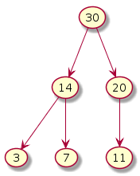 |
Before we can exchange, at most 2 comparisons may be necessary. Whenever the heap property gets broken, the bigger of the left, right will be interchanged with the parent.
- Two comparisons + one exchange = O(1) time
- At most log n comparisons + exchanges are necessary to fix the heap since the height of a heap is log n.
- In the above case, n = 5 and hence we did floor[log 5] = 2 comparisons.
Deleting from a heap: An example
A delete operation in a heap always removes the root.
|
Initial Start state of heap 
|
Delete root Root is empty 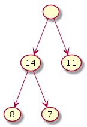 |
Bring last element 7 to the root 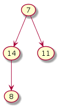 |
Fix heap Exchange 7 and 14 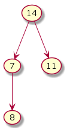 |
Fix heap Exchange 7 and 8 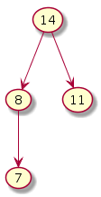 |
Again, the number of comparisons + exchanges done is log n since the height of the tree is log n.
Sorting using Heap
Sorting can be done by using heap in 2 steps.
- Build Max Heap: Given a list of elements, construct max heap (also referred to as Heapify)
- Heap Sort: Repeatedly remove max element and fixing the heap every time. This step can be done in-place by exchanging the max element with the last and discounting the last from heap.
We describe both the steps using an example. Consider the array: {7, 4a, 3, 8, 12, 18, 4b, 20, 1}. 4a and 4b represent the same number 4. a and b are used to distinguish one from the other.
1. Build Max Heap
Step 0: Create a binary tree by adding the array members in a level-order fashion.
| 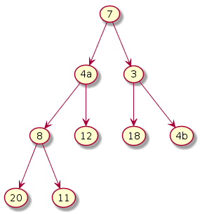 |
Clearly, the binary tree does not satisfy the heap property. Our objective is to turn this tree into a heap by fixing the nodes that violate the property. For this we have to decide from which node we have to start fixing. Clearly, the leaf nodes don't need any correction since they do not violate the heap property. Hence, we start from n/2th node (floor). One may start fixing the heap from root to n/2th node or in the reverse direction. Here, we fix the heap in the reverse direction and making appropriate exchanges.
Step 1: i = (n-1)/2 = 3
The subtree under 8 violates. Exchange 8 and 20. Note that we need to make two comparisons (i.e. 8 vs 20 and 8 vs 11) to decide if we need to make an exchange and if so, which node (20 or 11) should become the new parent.

|
Step 2: i = (n-1)/2 - 1 = 2
The subtree under 3 violates. Exchange 3 and 18.
| 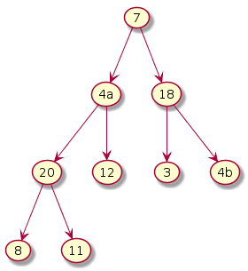 |
Step 3: i = (n-1)/2 - 2 = 1
The subtree under 4a violates. Exchange 4a and 20. Notice that this exchange causes violation underneath its left subtree. Hence, one more exchange is required. Exchange 4a and 11.
| 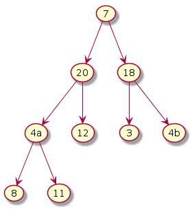 |
Step 4: i = (n-1)/2 - 3 = 0
The subtree under 7 violates. Exchange 7 and 20. Notice that this exchange causes violation underneath its left subtree. Hence, one more exchange is required. Exchange 7 and 12.
| 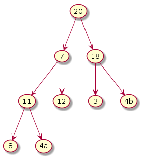 | 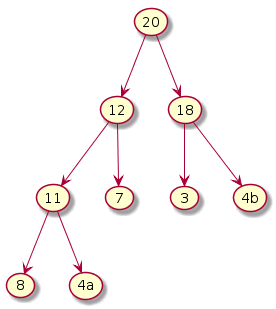 |
NOTE: In the above step two exchanges were enough. However, in the worst case one more exchange may have been required (had the second exchange happened in the left subtree and caused violation with its children).
A word about 'stability' property: When we started to build max heap 4a was relatively ahead of 4b. However, at the end of BuildMaxHeap step it ended up after 4b. Since, heap is non-linear it is not possible to guarantee the stability property.
Time complexity of Build Max Heap
We consider the 2 comparisons + 1 exchange as single operation taking O(1) time.
Total number of nodes = 9
Actual number of operations from steps 1 ~ 4 = 1 + 1 + 2 + 2 = 6
Number of operations in the worst case = 1 + 1 + 2 + 3 = 7 (considering the reasoning at the end of Step 4)
In general, the number of operations at any index i is equivalent to the height of the subtree rooted at i. Considering a complete binary tree of 2k - 1 nodes,
- n/2 (ceil) nodes will need 0 operation (as they are leaves and at height 0)
- n/4 nodes will need 1 operation (as they are at height 1)
- n/8 nodes will need 2 operations (as they are at height 2)
- .... so on and so forth
- 1 node will need log n operations (as they are at height log n)
Therefore, (n/2).0 + (n/4).1 + (n/8).2 + .... + 2.(logn-1) + 1.logn = O(n)
For detailed proof of time complexity, standard textbooks on algorithms can be referenced.
2. Heap Sort
In this phase, the max element (at the root) is exchanged with the last element of the heap in an iterative fashion. The heap size is decremented and henceforth, the last element is no more considered part of the heap. There are two consequences due to this.
- The violation of heap property caused due to the exchange of last element with root needs to be fixed. This takes log n time.
- As the Exchange-FixHeap cycle repeats, the initial part (denoting the heap) keeps shrinking in its size while the latter part (containing the sorted elements) keeps increasing in its size. In the illustration below, the circled nodes denote the initial heap part while the square nodes denote the latter sorted part.
As n-1 iterations complete, the entire heap turns into a sorted sequence when read in the level order.
Iteration i = 7
Initial heap

|
Exchange; size-- 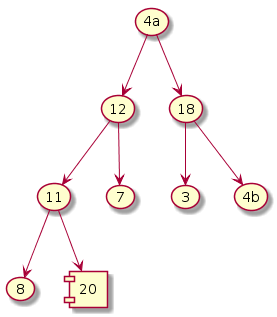 | Fix heap |
Iteration i = 6
| Exchange; size-- 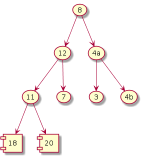 | Fix heap 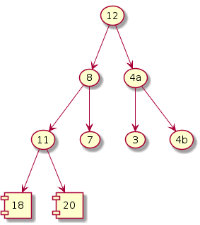 | Fix heap 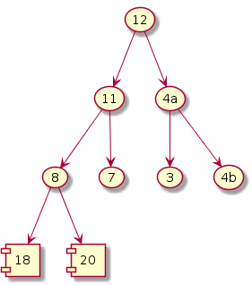 |
Iteration i = 5
| Exchange; size-- 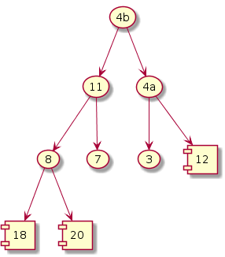 | Fix heap 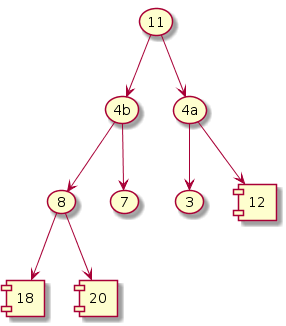 | Fix heap 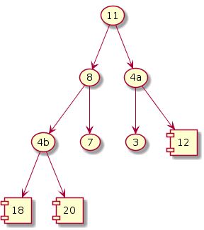 |
Iteration i = 4
| Exchange; size-- | Fix heap | Fix heap 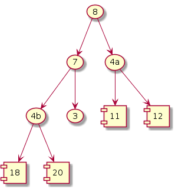 |
Iteration i = 3
| Exchange; size-- 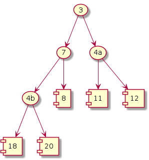 | Fix heap 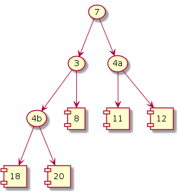 | Fix heap 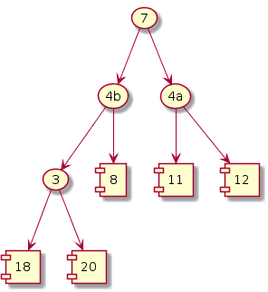 |
Iteration i = 2
|
Exchange; size-- |
Fix heap 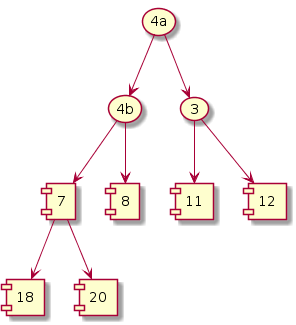 |
Iteration i = 1
Exchange; size-- 
|
Fix heap 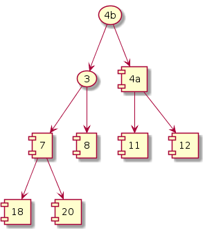 |
Iteration i = 0
|
Exchange; size-- 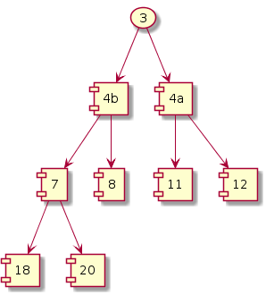 |
Fix heap not necessary 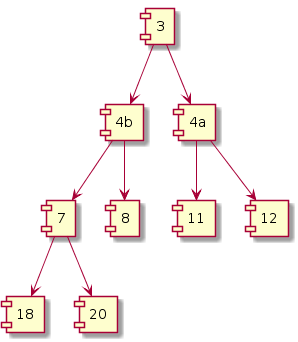 |
It can be observed that, as the iterations proceed the number of exchanges reduce as the heap is continuously shrinking in size.
The pseudo-code of the algorithm is given below.
int[] HeapSort(int A[0..n-1]) {
BuildMaxHeap(A[0..n-1]) // O(n) time
i = n-2;
while (i >= 0) { // Loop runs n-1 times
Exchange(root, A[i]) // O(1)
i--; // O(1)
FixHeap(A[1..i]) // O(logn)
} // Overall O(nlogn)
return A[0..n-1]
}
1. Time complexity
There are totally n-1 iterations. i.e. i goes from n-2 to 0. In each iteration i, at most log i exchanges are necessary as the size of the tree is log i.
Number of operations = (n-1) exchanges + [log n-1 + log n-2 + .... + 1] FixHeaps
<= (n-1) exchanges + [log n + log n + .... + log n] FixHeaps
= n-1 + (n-1)logn
= O(nlogn).
Since the BuildMaxHeap step takes linear time, the overall time complexity is O(n + nlogn) = O(nlogn).
2. Space complexity
It is easy to see that the space complexity S(n) = Θ(n) since we never used extra space beyond the heap size. For the same reason, we can conclude that the heap sort algorithm is in-place.
Heap sort is not stable since the tree is non-linear and the way the elements will be shuffled during the run is unpredictable.
Exercise: Will Heap Sort work faster if the input sequence was already sorted? Why or why not?